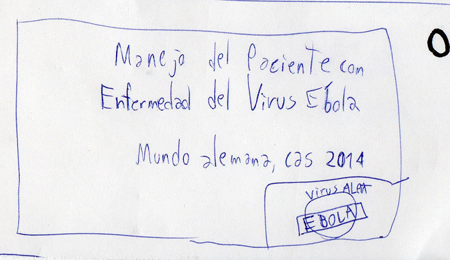
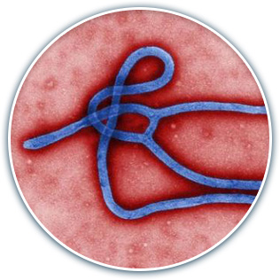
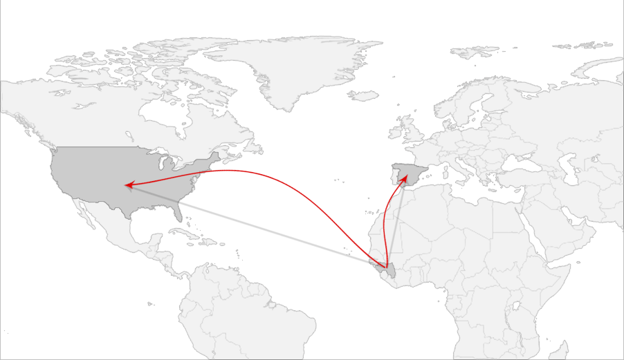
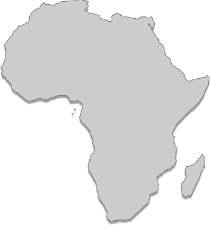
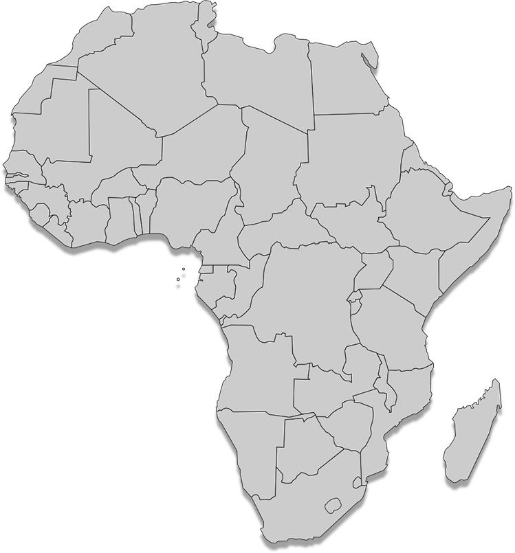
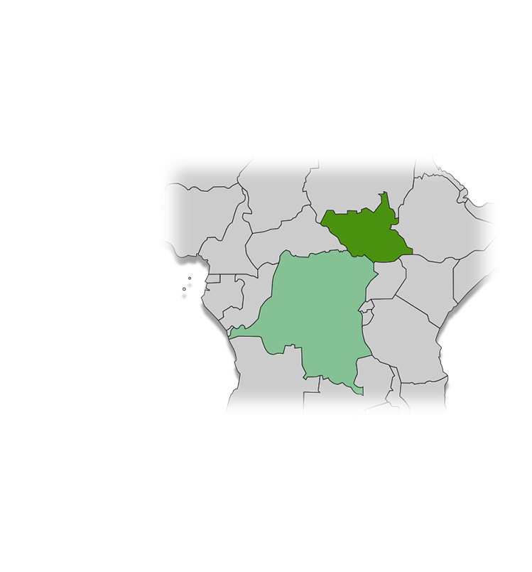
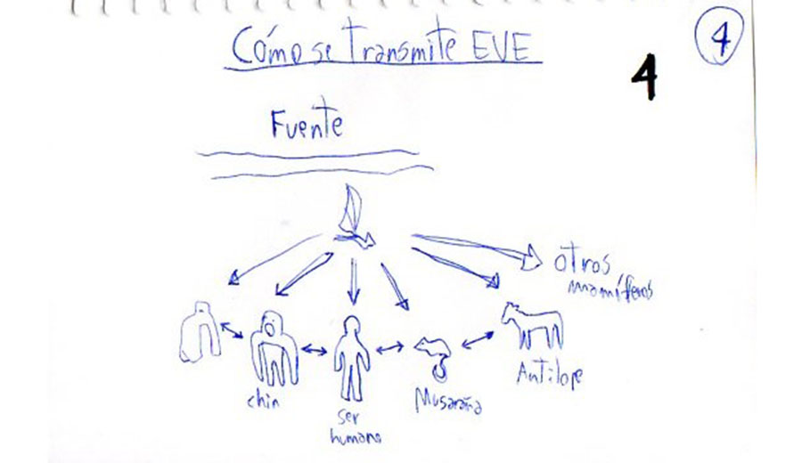
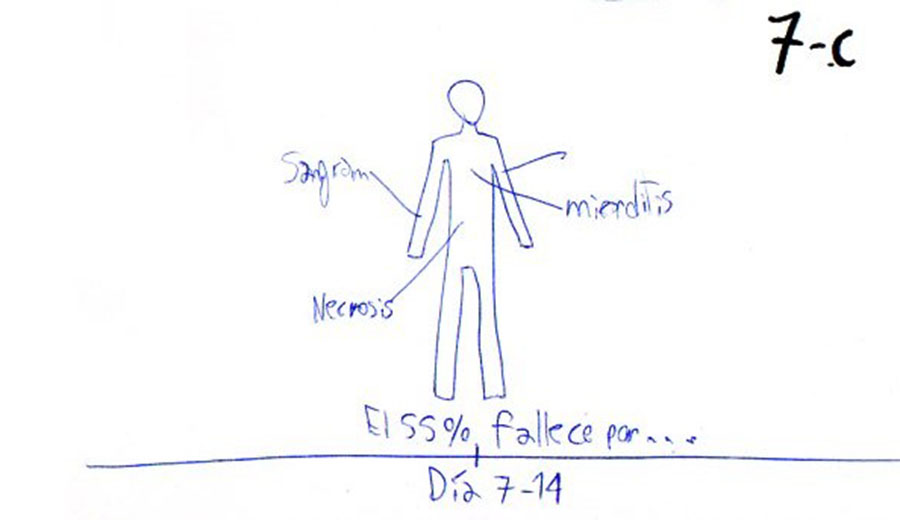
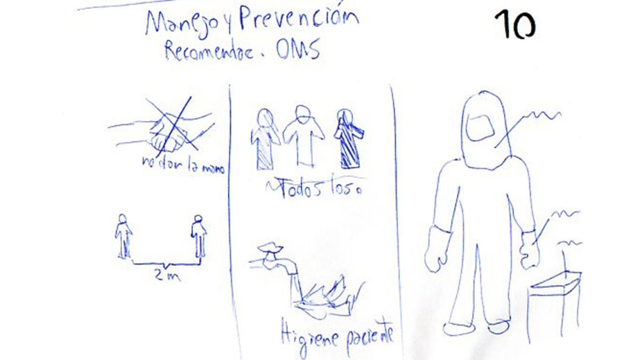

Es un virus perteneciente a la familia Filoviridae (familia de virus de ácido ribonucleico ARN) y género Filovirus.
Comprende 5 especies distintas:
- ebolavirus Bundibugyo (BDBV)
- ebolavirus Zaire (EBOV) (es el más frecuente)
- ebolavirus Reston (RESTV)
- ebolavirus Sudan (SUDV)
- ebolavirus Taï Forest (TAFV)
- ebolavirus Zaire (EBOV) (es el más frecuente)
- ebolavirus Reston (RESTV)
- ebolavirus Sudan (SUDV)
- ebolavirus Taï Forest (TAFV)
El EVE es una enfermedad infecciosa grave (tasa de letalidad puede llegar al 90%) pero que puede prevenirse.
Es el patógeno causante de la Enfermedad del Virus Ébola (EVE), antes conocida como fiebre hemorrágica del Ébola.
Puede afectar tanto a seres humanos como otras especies de mamíferos.





1976
2013
2014
El virus se detectó por vez primera en 1976 en dos brotes simultáneos ocurridos en Nzara (Sudán del Sur) y Yambuku (República Democrática del Congo, antigua Zaire)
Nzara
Yambuku
La aldea en que se produjo el segundo de ellos (Yambuku) está situada cerca del río Ébola, que da nombre al virus.
El actual brote de EVE empezó en Guinea en diciembre de 2013.
En la actualidad existe transmisión en Guinea, Liberia, Sierra Leona, Nigeria y Senegal.
En EEUU, Texas: caso importado desde Liberia, confirmado y fallecido el 08/10/2014
En España, el 06 de octubre se confirmó un caso secundario a caso repatriado desde Sierra Leona. Corresponde a una auxiliar de enfermería que participó en la atención directa del caso repatriado.


